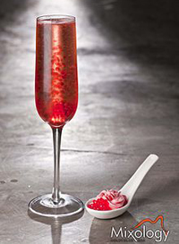

Molecular Mixology is the term applied to the process of creating cocktailsusing the equipment and techniques of molecular gastronomy.
These methods enable the creation of greater intensities and varieties of flavour, flavour combinations and different ways of presenting drinks, for example using gels, powders, foams, atomised sprays etc., as well as affecting the appearance of the cocktail.
To get a better idea of what molecular mixology is all about, we should look at the inspiration for it, which is molecular gastronomy. One area of molecular gastronomy is combining foods will similar chemical compositions. If one ingredient has high levels of amines or aldehydes then they should be combined with other ingredients that contain high levels of amines or aldehydes. Many times the combination's are not intuitive or obvious. For example the Fat Duck, a Michelin three star restaurant, combines oysters and passion-fruit jelly as one dish, where as another dish combines spice bread ice cream and crab syrup. Odd combination's, but supposedly they taste very good together.
The equipment used in molecular mixology can range from comparatively simple items such as blowtorches (frequently used in restaurant cooking) to more specialised items such as a vacuum sealer, a device for combining and infusing ingredients in a vacuum and thus preserving their flavours and enhancing the finished product. These infusions allow unexpected combinations of flavours in cocktails, including flavourings from non-edible substances, such as tobacco and leather (found in the Smoked Old Fashioned cocktail) and perfume (as in the Champagne No.5]).Another machine which is used by the best mixologists is the Rotavap. This is a vacuum rotary distillation setup, which allows the extraction of aromas, low temperature reduction of juices and the production of flavored spirits.
The techniques used by a mixologist are mostly bound to the new equipment which is provided by the molecular gastronomy. They are, for the most part, adaptions of new techniques for food preparation, for example: airs were originally created for food applications, but nowadays you can find aires on top of cocktails
The spherification is one of the techniques applied to molecular mixology, is the culinary process of shaping a liquid into spheres, they can be small like a caviar or larger like an egg yolk.
